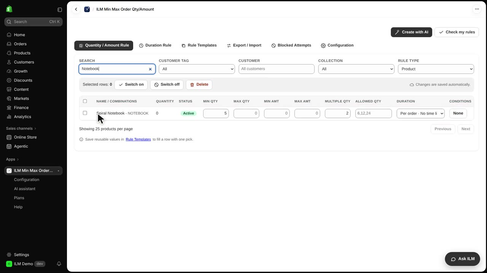
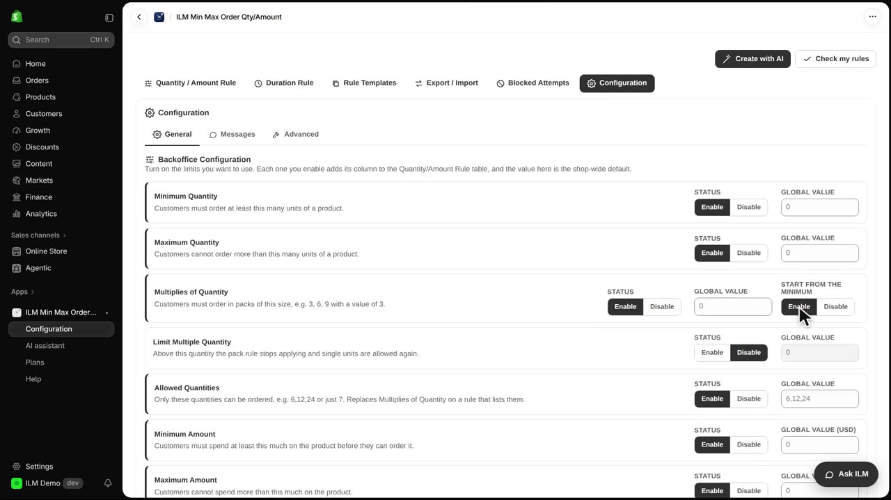
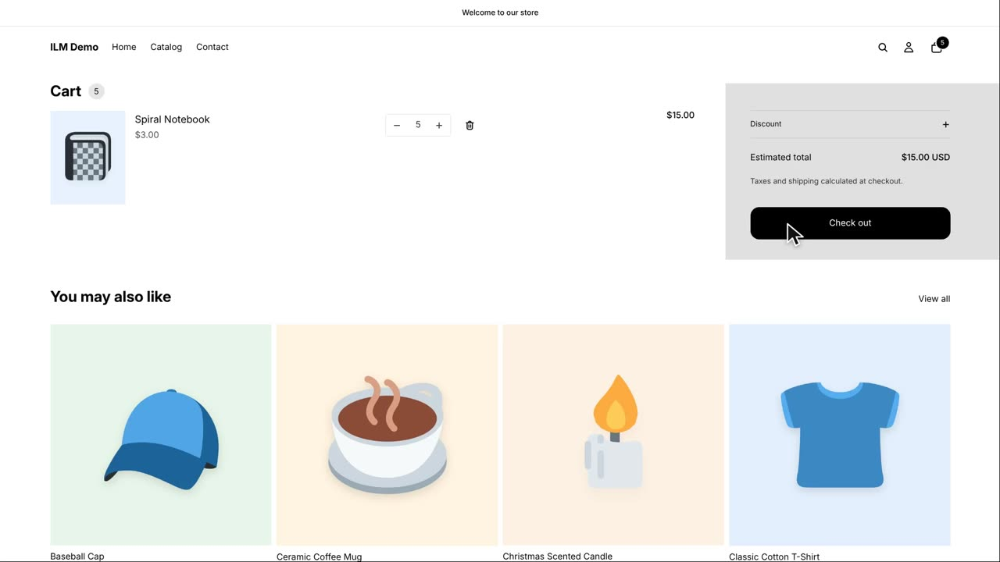
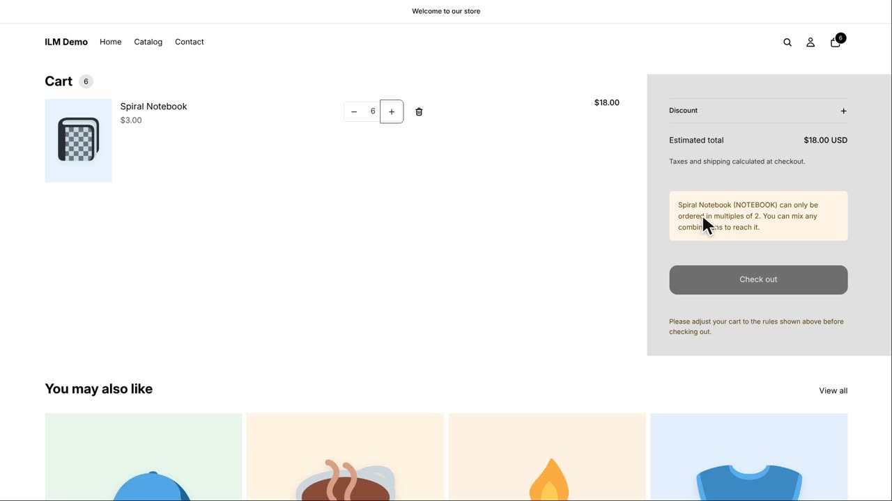

When a product has both a minimum quantity and a multiple quantity, the Start from the minimum setting decides where the allowed steps begin. Without it, shoppers can only buy exact multiples of the step, even if that skips over the minimum. With it, the steps begin at your minimum, so the first allowed quantity is the minimum itself. Today we look at the Spiral Notebook, which needs at least five units and sells in steps of two.
Here is the Spiral Notebook rule in the app. Min Qty is set to five, and Multiple Qty is set to two. So the shop wants at least five notebooks, and quantities should move in steps of two.

With Start from the minimum switched off, the allowed quantities are plain multiples of two: six, eight, ten, and so on. A shopper who tries to buy five notebooks is refused, because five is not a multiple of two. The cart shows the warning notice and the shopper has to change the quantity.
Now open the Configuration tab and find the Multiplies of Quantity card. Next to Start from the minimum, set the switch to Enable. This tells the app to count the steps from your minimum instead of from zero.

Back in the cart, the shopper can now check out with five notebooks. The allowed quantities start at the minimum and then step by two: five, seven, nine, and so on. Five is accepted because it is the minimum itself.

And six is now refused, because it is not five plus a multiple of two. The next valid quantity after five is seven, then nine. The warning notice appears again so the shopper knows to adjust the quantity.
